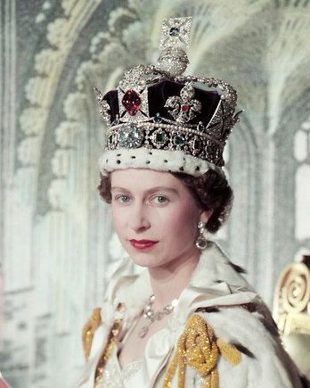
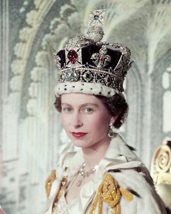

Holy Crown of Hungary
The Holy Crown of Hungary (Hungarian: Szent Korona, Latin: Sacra Corona), also known as the Crown of Saint Stephen, named in honour of Saint Stephen I of Hungary, was the coronation crown used by the Kingdom of Hungary for most of its existence; kings were crowned with it since the twelfth century. The Crown symbolized the King's authority over the Lands of the Hungarian Crown (the Carpathian Basin), and it was a key mark of legitimacy. Through the history of Hungary, more than fifty kings were crowned with it, with the last being Charles IV in 1916. The only kings not so crowned were Wladyslaw I, John Sigismund Zápolya, and Joseph II.
The enamels on the crown are mainly or entirely Byzantine work, presumed to have been made in Constantinople in the 1070s. The crown was presented by the Byzantine Emperor Michael VII Doukas to the King Géza I of Hungary; both are depicted and named in the Greek language on enamel plaques in the lower crown. However, in popular tradition the Holy Crown was thought to be older and of Papal provenance, dating to the time of the first King Stephen I of Hungary crowned 1000/1001. It is one of two known Byzantine crowns to survive, the other being the slightly earlier Monomachus Crown in the Hungarian National Museum, which may have had another function.


 
